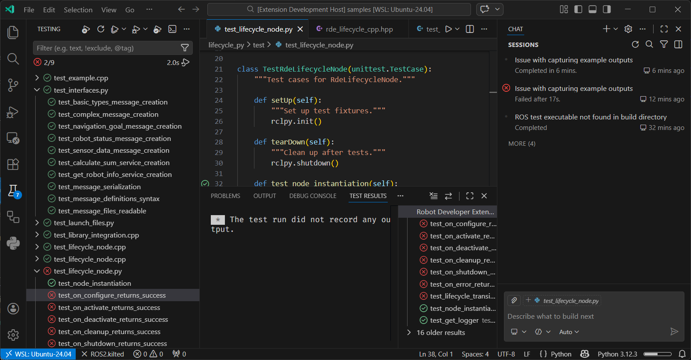

Test Explorer
The extension integrates with VS Code's Test Explorer to discover and run ROS 2 tests directly from the editor.

Supported Test Types
The Test Explorer automatically discovers the following test types:
- Python Unit Tests - Tests using Python's
unittestframework - Python PyTest - Tests using the
pytestframework - C++ GTest - Tests using Google Test (GTest) framework
Using the Test Explorer
- Open the Test Explorer view in VS Code (click the test flask icon in the Activity Bar)
- The extension automatically discovers tests in your ROS 2 workspace
- Tests are organized by package and test type
- Use the Run button to execute tests or Debug button to debug tests with breakpoints
Test Discovery
The extension automatically discovers tests by scanning for test files matching these patterns:
- Python:
test_*.py - C++:
test_*.cpp,*_test.cpp,*Test.cpp
Tests are refreshed automatically when test files are created, modified, or deleted.